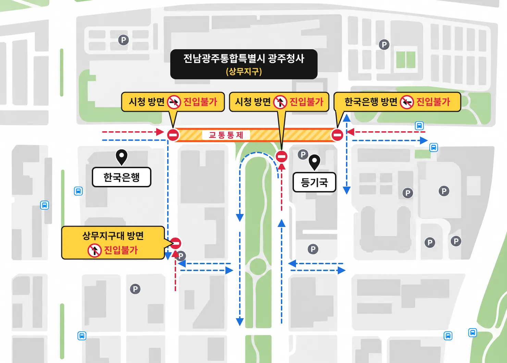

1
뭐니 뭐니 해도 재료
광주김치의 팔할은 재료가 합니다. 전남의 청정지역에서 생산된 배추, 무, 마늘 등 채소와 천일염, 멸치젓 등 다양한 재료를 사용해 김치의 재료가 신선하고 풍부하죠.
김치축제 즐길 준비하세요
김치로 할 수 있는 모든 걸 합니다. 올해도 합니다. 지금까지 그래왔습니다. 그렇지만 매년 재미있었습니다. 올해도 놓치면 후회합니다. 제33회 김치축제가 다가오고 있어요
광주김치
광주김치의 팔할은 재료가 합니다. 전남의 청정지역에서 생산된 배추, 무, 마늘 등 채소와 천일염, 멸치젓 등 다양한 재료를 사용해 김치의 재료가 신선하고 풍부하죠.

전남광주는 예로부터 영산강을 중심으로 펼쳐진 평야와 산, 들, 바다가 한데 어우러져 오랫동안 자연의 혜택을 받으며 맛의 고장으로 자리 잡았어요.

그중에서도 광주와 전남의 김치는 가장 풍요로운 맛과 정취를 담고 있어 ‘전라도 김치’, ‘광주김치’라는 고유명사로 알려질 정도예요. 전남광주 사람들의 맛깔스런 손맛과 넉넉한 인심, 한결같은 정성으로 갖은 양념을 듬뿍 넣어 버무린 광주김치에는 매콤하면서 김치 고유의 감칠맛과 깊은 향이 배어 있답니다.
먹고, 즐기고, 참여하라!
10월 23일(금)1일차
10월 24일(토)2일차
10월 25일(일)3일차
게릴라 이벤트 프로그램떴다, 김치 특파원
 출처: 광주김치축제
출처: 광주김치축제
김치를 주제로 다채로운 미식을 경험하고 문화 콘텐츠까지 한자리에 즐기는 복합 식문화 공간! 김치요리 레스토랑부터 푸드쇼, 공연까지 한자리에서 즐길 수 있어요.
천인의 밥상 업체리스트
광주김치축제의 빨간맛! 야간 프리미엄 파티가 열립니다. 하루는 노래로, 하루는 흥으로 매일 달라지는 김치파티! 드레스코드를 맞춰오면 다양한 선물도 쏟아져요!
1일차
RED NIGHT
화려한 칵테일쇼부터 정통 오페라 공연까지 노래와 건배, 관객 참여를 통해 모두가 우아하게 즐기는 1일차 김치파티
함께하는 사람들‘바텐더 채주원’, ‘전남광주통합특별시 시립오페라단’
드레스코드RED(빨강)빨간 옷, 작은 소품이라도 OK~!
2일차
K-HEUNG NIGHT
전통연희, 조선팝, 오케스트라 공연까지 신명나고 역동적인 분위기의 2일차 김치파티
함께하는 사람들‘연희점추리’, ‘클래트릭 심포니 오케스트라’, ‘김산옥’
드레스코드전통·흥(興)한복·전통 소품·흥나는 모든 것!
드레스코드 맞추면 쏟아지는 선물
드레스코드 맞춰 입고 오면웰컴 생맥주 or 음료 1잔!
오늘의 베스트 드레서로 뽑히면총 100만원 상당의 선물!
맛있는 김치를 먹고 싶다면?
 출처: 광주김치축제
출처: 광주김치축제
HACCP 인증 업체들과 대한민국김치경연대회 대통령상 수상 명인들의 김치, 광주 전통시장 내 김치 맛집까지! 한곳에서 만나볼 수 있는 김치 직거래 장터도 만날 수 있어요.
배추김치, 파김치, 묵은지, 열무김치는 기본. 갓김치, 꼬들빼기, 겉절이, 장아찌, 무등산수박김치에 단호박김치, 양파김치 등 김치 맛있기로 유명한 업체들이 여러분의 미각을 유혹할 거예요.
참여업체·판매김치 확인하기김치로 이렇게까지 한다고?
광주김치축제는 김치로 할 수 있는 모든 것을 합니다. 김치 러버라면 김치 팝업 스토어를 놓치지 마세요.
 출처: 광주김치축제
출처: 광주김치축제매일 달라지는 테마, 오늘만 만날 수 있는 김치!
축제 3일 동안 매일 새로운 테마의 김치 라인업을 선보입니다. 그날의 특별한 김치를 골라보는 재미를 즐겨보세요.
 출처: 광주김치축제
출처: 광주김치축제두근두근, 김치랜덤팩에는 어떤 김치가 들어있을까?
김치마켓의 다양한 김치를 소량씩 담아 랜덤 6종으로 구성한 ‘김치랜덤팩’! 축제에서만 만날 수 있는 특별 한정가격으로 즐겨보세요. 여기에 광주김치축제만의 특별한 김치 티셔츠 굿즈까지! 먹고, 입고, 소장하는 색다른 김치 굿즈를 만나보세요.
 출처: 광주김치축제
출처: 광주김치축제최고심과 김치가 만났다!
익숙한 김치를 최고심만의 귀엽고 유쾌한 감성으로 풀어낸 ‘김치가 최고심’. 김치를 소재로 한 재치 있는 메시지와 귀여운 캐릭터가 담긴 다양한 ‘김치가 최고심’ 굿즈를 한자리에서 만나보세요.
김치 담그기 어렵지 않아요


대한민국 김치경연대회 대통령상 수상 김치 명인에게 직접 배우는 특별한 시간! 명인이 직접 선정한 김치를 함께 담그며 오랜 경험으로 쌓은 김장 비법과 노하우를 만나보세요.
10월 23일(금)
김지미 명인
2024년 대통령상 수상
산골 더덕을 품은 면역력 백김치
10월 24일(토)
신명화 명인
2022년 대통령상 수상
대왕 콜라비와 오그락지
10월 25일(일)
곽은주 명인
2000년 대통령상 수상
통밀의 구수함으로 더 깔끔한 통밀 섞박지
내 손으로 버무린 김치에 무등산수박 장아찌 주먹밥을 곁들이면? 김치 1kg 버무리기와 무등산수박 장아찌 주먹밥 만들기를 함께 즐겨보세요.
김치 담그기 클래스 예약하기김장 오락실과 김장 운동회에서 남녀노소 누구나 신나게 즐겨보세요. 김장의 과정을 재미있는 미션으로 체험하고, 김치맨과 함께 즉석 미니 운동회에도 참여할 수 있는 참여형 프로그램
절이고, 양념하고, 버무리는 김장 과정을 게임으로 재해석한 상시 체험 프로그램
김치맨과 함께 즉석에서 즐기는 미니 운동회! 김치맨의 진행과 함께 세대가 어우러져 즐기는 신나는 참여형 프로그램
Do you know Kimchi? 외국인 대상 행사장 안내와 김치 시식, 세계 절임 문화 체험, 호박 인절미 체험 등 한국의 음식문화와 전통문화를 함께 즐기는 체험형 라운지
대한민국 최고의 김치명인이
대통령상을 건 유일한 김치대회, 대한민국 김치경연대회가 김치축제 기간에 함께 열려요.
 출처: 광주김치축제
출처: 광주김치축제
1차경연과 2차경연을 거치는 대한민국 김치 경연대회는 전국의 김치 명인이 총출동하는 대회로도 유명한데요. 가자미 갓 쌈지, 다슬기 동김치, 왕대추반지 등 역대 수상작의 면모도 어마어마하답니다.
대통령상 수상 김치명인의 특별한 김치비법을 생생하게 전수하는 시연회도 열리는데요. 대통령상 수상 김치명인 라이브쇼도 놓치지 마세요!
광주김치축제 공식 유튜브
다양한 행사로 가득한 광주김치축제! 온라인에서 함께 즐겨보세요.
광주 김치축제 공식 유튜브도 있습니다.
방문 전 꼭 확인하세요

김치축제 기간에는 광주청사 앞 사거리부터 한국은행 후문 삼거리까지 교통통제를 실시합니다. 차량 통제구간과 우회경로를 미리 확인하시길 바라며, 대중교통을 이용해 방문하시면 축제를 더욱 즐겁게 즐길 수 있을 거예요.
현장 교통상황 및 관계기관 협의에 따라 상기 ‘도로통제’ 구간 및 운영 시간이 일부 조정될 수 있습니다. 통제구간을 지나는 시내버스는 우회하므로, 사전에 버스 운행 정보를 확인하세요.
시내버스 운행 정보 확인하기